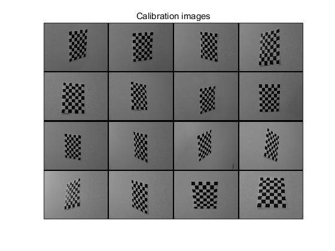
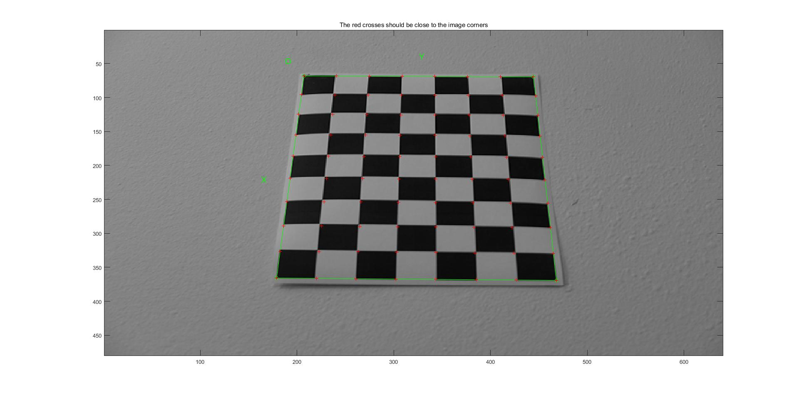

The very first job is to compute focal length. I use Jean-yves' Calibration Toolbox and follow those steps in its guidance.
I take 16 photos for the cheakboard pattern from 16 different angle.
Then extract the grid corner. I set (Wintx,Winty) to (5,5), and size dx is 30mm. One of 16 results is shown below.